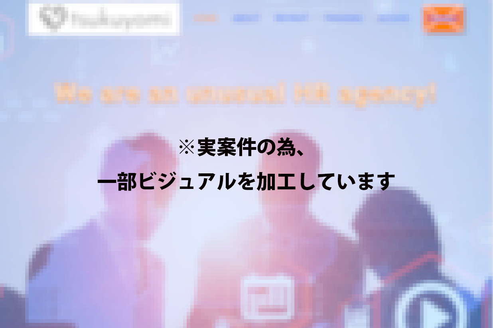

「技術の体温」を実装する。15年の現場感とAIスキル。
100回の拒絶を「新たな評価基準（AI・Unity）」への挑戦と定義し、自分を信じてスキルを磨いたプロセス。
「100回の面接。年齢と『実務未経験』という言葉に、グリッチノイズのような拒絶を浴びました。
でも、そこで立ち止まらなかった。なぜなら、私には15年、介護現場で培った『人を想う心』と、Unityで磨いた『動かす力』があったから。それらをAIスキルでさらに強固にし、Webの世界へ『Override（上書き）』します。」
- 徹底した他者視点（UX）: 15年、言葉にならないニーズを汲み取ってきた。高齢者・障害者にも「優しい」Webアクセシビリティを実装します。
- AIによる圧倒的生産性: 1人でデザインからデプロイまで完結。AIを活用し、チーム並みのスピードで課題解決を。
- Unityの知見によるリッチな実装: タイムラインや数式を用いた、滑らかで心動かすアニメーション（ヒーロー動画のような炎、呼吸）の実装。
Skills Override
AIと15年の知見を掛け合わせ、従来の「経験」の定義を上書きします。
AI-Driven Coding
AIを活用した高速コーディング。HTML/CSS/JSの構造をAIと対話しながら構築し、実務未経験を補って余りあるスピードでデプロイまで完結させます。
Motion & Interaction
Unityでのゲーム制作経験と知見をWebへ転用。今回のような動画制御や、「心地よい」インタラクションを追求します。
Commercial AI Creative
AI生成からPhotoshopでの商用加工まで完結。著作権リスクを徹底排除した「Adobe Firefly」をメインに活用。商用利用の安全性を担保しつつ、Photoshop等のAdobe製品と連携した一気通貫の高品質なビジュアル制作、アセット生成が可能です。
Care-Driven UX
15年の介護現場経験。言葉にならないユーザーの「不便」を汲み取り、アクセシビリティに基づいた設計を技術で体現します。
Projects Complete

企業公式サイト フルリニューアル
Design / Coding / Deploy / 1人完結
実際の制作では、クライアントへのヒアリングから要件定義、コーディング、そして公開（サーバー構築・デプロイ）までをすべて単独で完遂しました。
| 担当範囲 | ディレクション、デザイン、コーディング、デプロイ |
|---|---|
| 使用技術 | HTML5, CSS3, JavaScript |
| GitHub Pages | 動作デモページ |
| GitHub | ソースコード（GitHubリンク） |
Why Me?
15年の現場が教えくれた、画面の向こう側の「体温」
100回の拒絶を経験しました。しかし、私の15年のキャリアは決して無駄ではありません。介護の現場で私がずっと行ってきたこと――それは、「言葉にならない相手の不便や願いを徹底的に観察し、先回りして解決する」ということです。
Web制作における「UX（ユーザー体験）」や「アクセシビリティ」の本質は、まさにこの『他者への想像力』にあります。AIの圧倒的なスピードを使いこなしながらも、最終的にそれを受け取る『人間』に誰よりも優しく寄り添うコードを書く。それが、私にしかできないWeb制作です。
Connect with Me
お仕事のご相談や、技術に関するお話など、まずはお気軽にお問い合わせください。